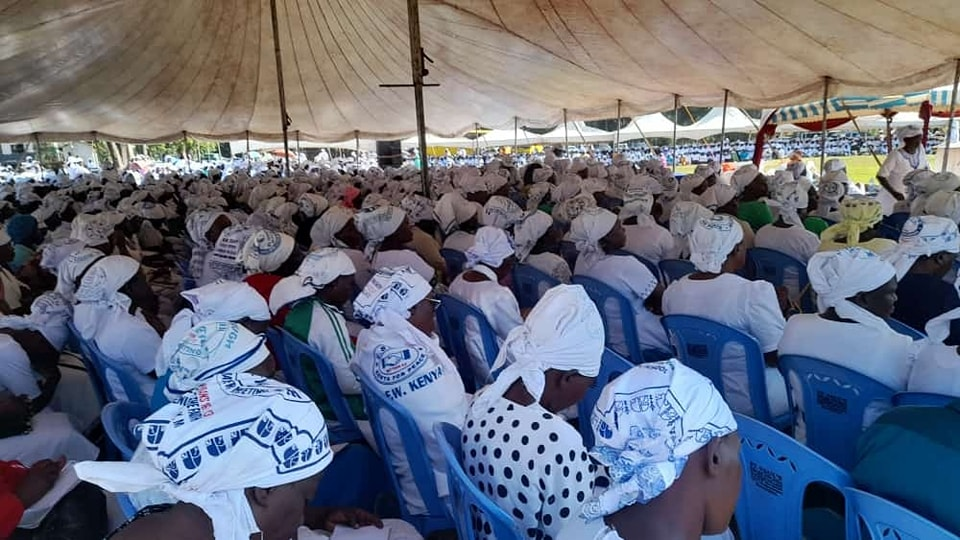

Shalom & Welcome!...
At Kakamega Yearly Meeting of Friends Church (Quakers), we warmly invite you to journey with us in faith, rooted in the timeless Quaker values of Simplicity, Peace, Integrity, Community, Equality, and Stewardship (SPICES).
Together, we grow in love, serve with purpose, and live out the light of Christ in every action.

The primary and overall objective of the Kakamega Yearly Meeting of Friends Church (QUAKERS) (KYM) shall be to preach the Gospel of God's love and salvation making known Jesus Christ as Lord, and Savior in all our services to all people in accordance with the Holy Bible through worship services, prayer meetings, evangelism and visitations. To provide spiritual guidance, care and counseling to its members, in order to fulfill the Great Commission of our Lord Jesus Christ. To see that men and women become responsible disciples of the church whose Head is Jesus Christ and to provide sound Christian teachings to all members and adherence to the Quaker Faith and Practice.
Vision
To be the Preffered Spiritual Nourishment Church in Kenya.
Mission
To consistently remain united in preaching the gospel of peace, spiritual growth and economic empowerment through
properly co-ordinated activities based on acceptable social values that will attract an increase in our faith.
Our history
Kakamega Yearly Meeting of Friends (Quakers) came into operation after being granted authority to run as a Yearly Meeting by East Africa
Yearly Meeting-Kaimosi during an Annual Delegates Conference that was held in 1993.
Upon being granted Yearly Meeting status, we had our first Annual Delegates Conference in the year 1994 held at Kakamega Friends Church -Amalemba.
The Yearly Meeting Headquarters was situated at Kakamega Friends Church from the year 1994 to 2016 when we relocated to Handidi Friends Church. Handidi Friends Church hosted the Yearly Meeting from the Year 2016 to 2024.
Our Impact in Numbers
Over the years, Kakamega Yearly Meeting has experienced tremendous growth both spiritually and through impactful development projects.
0
Members
0
Village Meetings
0
Monthly Meetings
0
Projects
Welcome to Kakamega yearly meeting
Discover Kakamega a lush, vibrant region in the heart of Western Kenya. Come fellowship with us and experience the wonders of God's creation
from the legendary Crying Stone to Kakamega Forest, Kenya’s only remaining tropical rainforest. Explore, connect, and be inspired by nature’s divine masterpiece.
.jpeg)
.jpeg)
Notable Upcoming Events

Quaker Church Programs (Q.C.M)
The Q.C.M Conference was successfully held at Ichina Monthly Meeting form 7th - 10th August.

Young Friends Programs (Y.F.P)
The Y.F.PF Conference will be hosted by Mituli Monthly Meeting from 10th - 14th December.

United Society of Friends Women (U.S.F.W)
The U.S.F.W Conference will be hosted by Shanderema Monthly Meeting from 3rd - 7th December 2025. The main speaker will be Pst Beatrice Bunyali.

Quakermen
The Quakermen Annual Conference will be hosted by Shikulu Monthly Meeting from 12th - 16th November 2025.